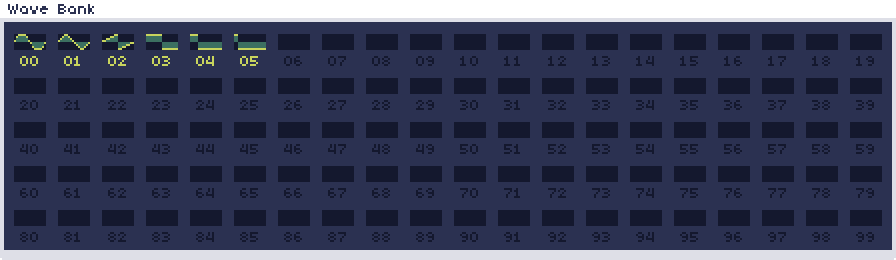
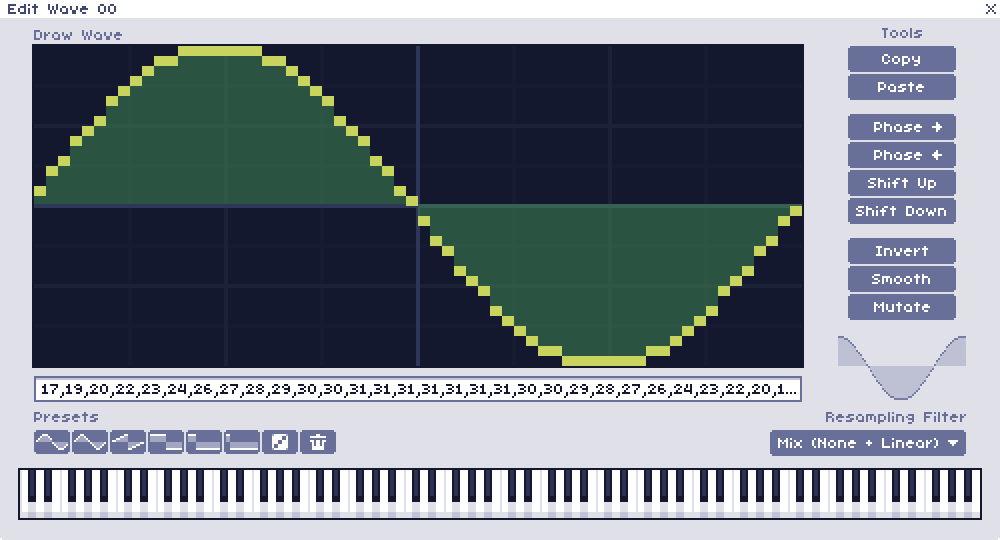

Wave Bank
The wave bank is located in the top right of the main screen.
There are 100 different wave slots, numbered 00-99, inside the wave bank. Each slot shows a small preview of what the wave looks like.
In every new song, the first six will be filled in with presets by default.
Wave Editor
A wave can be edited by clicking its slot in the wave bank, which will open the Wave Editor.
This window allows you to change qualities of the currently selected wave. Pushing the left or right arrow keys will cycle through the waves in the bank, so you can easily switch between editing different waves.
Draw Wave
Clicking in this area will allow you to draw any wave shape in a 64x32 box. Holding shift while doing this will let you draw straight lines. This is useful for creating square, sawtooth or triangle-like waves with straight edges.
Below is a text box with a string of numbers. These numbers correspond to each sample that describes the wave, and is a way that the wave can be stored or shared outside of WaveTracker. Double clicking this will let you edit or copy its contents.
Presets
There are 8 different presets to choose from. Sine, Triangle, Sawtooth, 50% pulse, 25% pulse, 12.5% pulse, Randomized, and Clear (Resets the wave to be blank)
Tools
These can be used to modify the shape of the wave, or copy and paste from one wave to another. Below is a moving preview of how the wave looks in motion.
| Tool | Description |
|---|---|
| Copy | Copies this wave to an internal clipboard |
| Paste | Pastes the wave copied to the internal clipboard |
| Phase > | Moves all points in the wave one space to the right, eventually looping back around |
| Phase < | Moves all points in the wave one space to the left, eventually looping back around |
| Shift up | Moves all points in the wave one space up, stopping at the top |
| Shift down | Moves all points in the wave one space down, stopping at the bottom |
| Invert | Flips the polarity of the wave, high amplitudes become low amplitudes and vice versa |
| Smooth | Attempts to round out any sharp corners in the wave. This will make the sound darker and less bright |
| Mutate | Adds slight randomization to the wave, making it sound brighter and altering the timbre |
Resampling Filter
Each wave can use one of 3 different resampling modes, which affects how the wave sounds in different registers.
| Resampling Mode | Description |
|---|---|
| Harsh | No interpolation, uses nearest neighbor resampling. This gives a very harsh and aliased sound. Good for square and pulse waves. |
| Smooth | Linear interpolation. This gives a very smooth sound. Good for sine and triangle waves, but can dull out squares and sawtooths, especially at lower notes. |
| Mix | An average between the harsh and smooth modes. Provides a compromise that has a little bit smoother sound but not quite as dulling at low frequencies. This is the default option for any new waves, unless otherwise changed in preferences. |